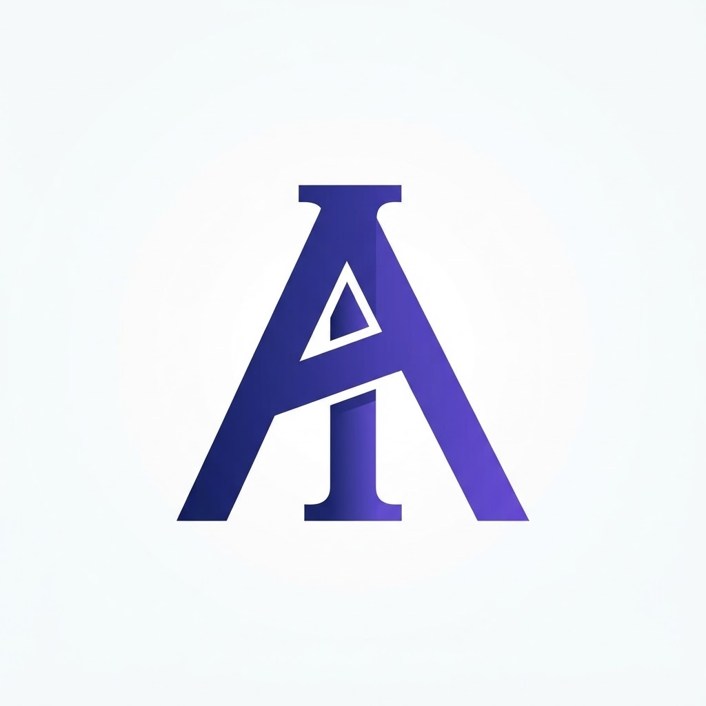

Paz Interior
🕊️
Paz mental contra la ansiedad
Oración de sosiego para despejar pensamientos abrumadores, soltar cargas y descansar en la serenidad divina.
Un espacio dedicado a brindar consuelo, esperanza y sabiduría espiritual mediante reflexiones breves y oraciones en video vertical (9:16) diseñadas para transformar tu jornada con propósito.
Un ministerio digital concebido para acercar la palabra de aliento a través de las plataformas donde las familias interactúan a diario.

Un Minuto de Paz y Fe nace como una respuesta a la prisa, la ansiedad y las dificultades cotidianas que enfrentan las familias en el mundo actual. Creemos firmemente que una reflexión oportuna de sesenta segundos, acompañada de una oración sentida, puede renovar el ánimo y restaurar la paz en el corazón.
A través de nuestra plataforma técnica editorial Devocionales Content Publisher, adaptamos pasajes bíblicos, oraciones familiares y valores universales al lenguaje visual contemporáneo de las redes sociales, con locuciones serenas, música reconfortante y subtitulado claro para acompañar a nuestra comunidad cada día.
Conoce las series devocionales activas producidas para nuestras transmisiones en video vertical.
Oración de sosiego para despejar pensamientos abrumadores, soltar cargas y descansar en la serenidad divina.
Clamor de unidad, comprensión y bendición para proteger el hogar y fortalecer los lazos afectivos.
Reflexión sanadora para soltar resentimientos del pasado, restaurar el alma y hallar paz en el perdón.
Oración de cobertura y discernimiento para guardar los pasos, integridad y decisiones de los hijos.
Bendición maternal y paternal de gracia, fortaleza interior y cuidado angelical en cada paso de su vida.
Guía y temple espiritual para liderar la familia con prudencia, justicia y amor incondicional.
Oración por orden, honestidad y bendición en el manejo responsable de los recursos de la casa.
Renovación del pacto matrimonial, comunicación paciente y ternura para superar diferencias cotidianas.
Acompañamiento espiritual ante el duelo, brindando aliento para encontrar consuelo y fortaleza.
Agradecimiento por las fuentes de empleo, bendición sobre las manos trabajadoras y apertura de puertas.
Reconocimiento sincero por el techo, la salud compartida y el sustento que nunca falta en la mesa.
Protección contra la discordia y compromiso para edificar un matrimonio duradero basado en la fe.
Publicamos nuevo contenido en video vertical todos los días. Síguenos en tu plataforma favorita:
Si deseas hacernos llegar una sugerencia de temática devocional, tienes alguna consulta sobre nuestra plataforma o deseas contactar a nuestro equipo editorial, puedes escribirnos con toda libertad:
soporte@devocionalescontent.comRespondemos en días hábiles dentro de las 24 a 48 horas.